别名(alias)
回忆
- 上次我们研究了删除
- 删除时可以使用通配符
- 参数
- -r 递归
- -f 强制
- -v 详细信息
- -i 交互式
- 这样我们就了解了rm命令
- 可以再了解一下改名命令么？
灵魂三问
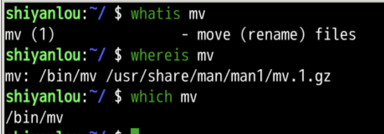
尝试移动
- 把/usr/bin/python符号链接所指向的python2.7
- 移动到当前目录(~)
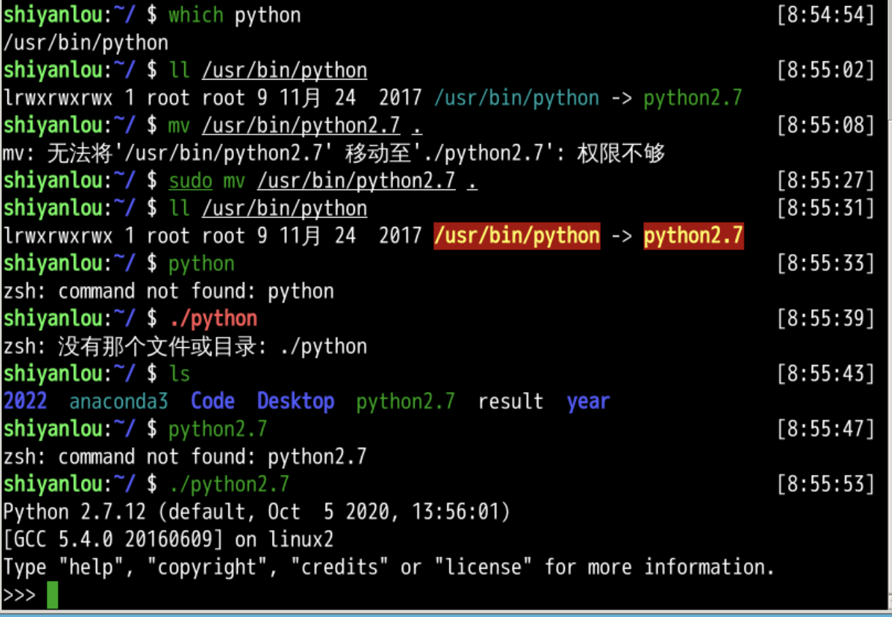
- 移动之后软链接失效
- 但是当前路径的python是好用的
- 如果我想保持当前路径的python可用
- 也恢复原来的软链接
- 应该如何呢？
拷贝(cp)
- 将当前路径下的python2.7拷贝至/usr/bin下
- 恢复原来的软链接
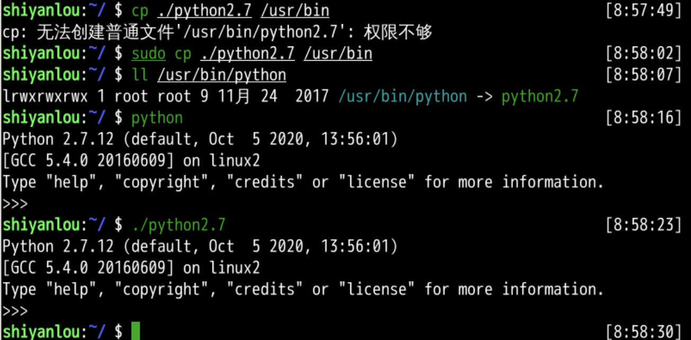
文档手册
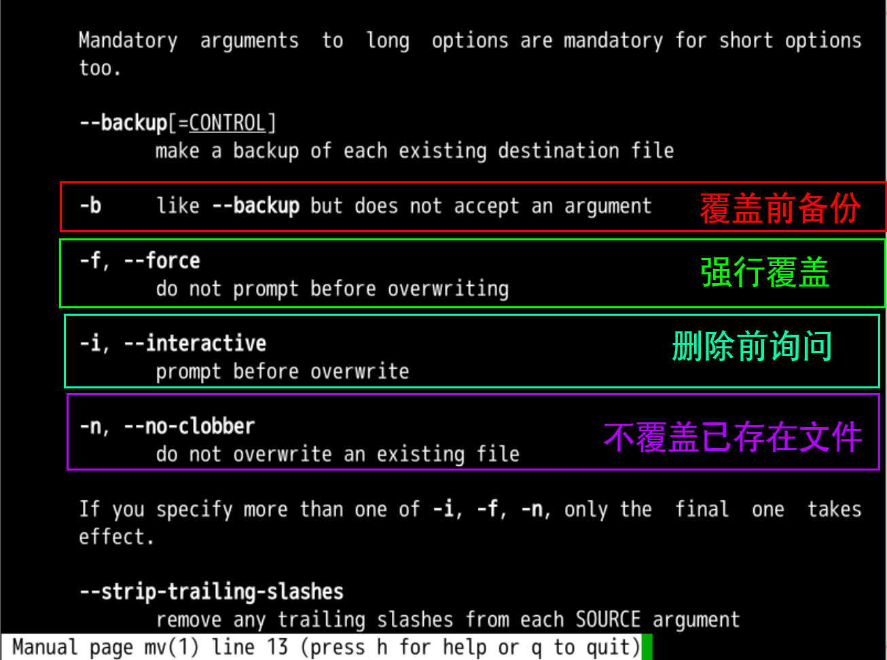
动手
- sudo mv -v year/winter/1/3* ./
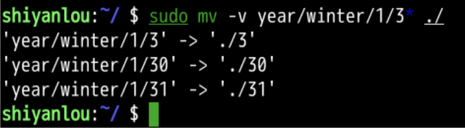
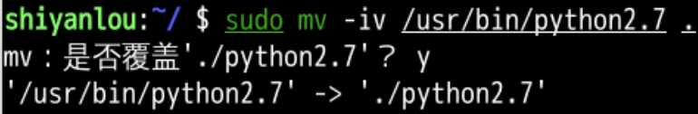
备份
- -n 是不备份
- -b 是覆盖并备份
- 首先移动30到当前位置
- 备份原来的30成为备份文件(30~)
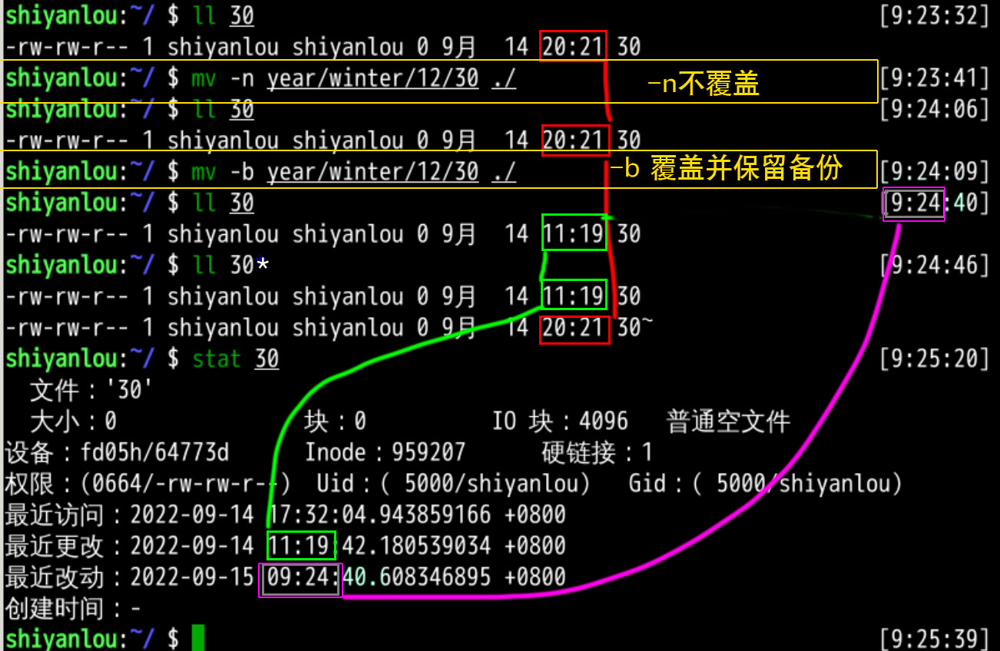
- ls中显示的时间是最近更改时间
- 原来的30真的变成了30~么？
再备份
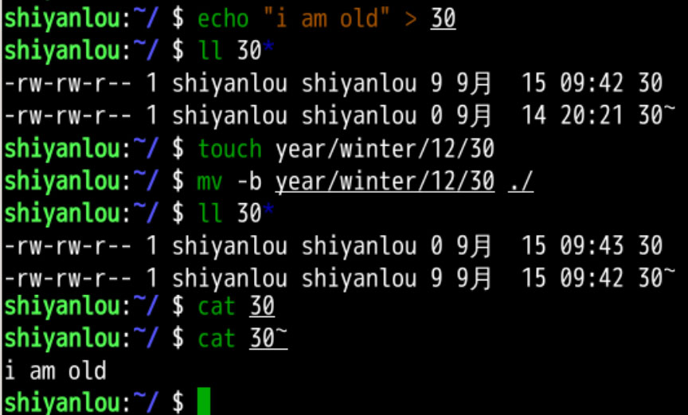
- 这些东西会出现在30~中
- 可是这个只能有一个备份文件么？
- 再覆盖原备份就消失了...
指定后缀
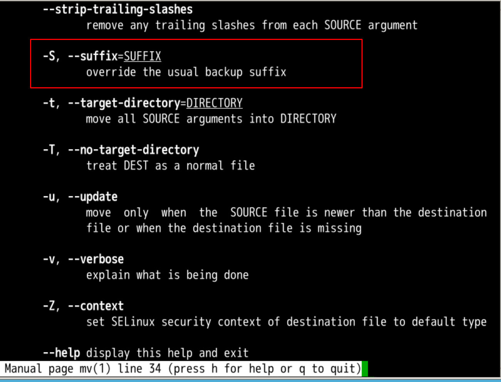
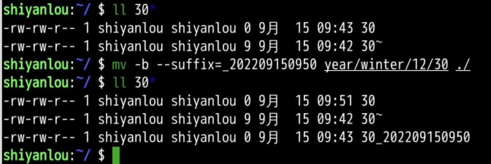
- 这样就可以指定备份的后缀名了
- 可以要求新的覆盖旧的么？
- 但旧的不能覆盖新的吗？
更新
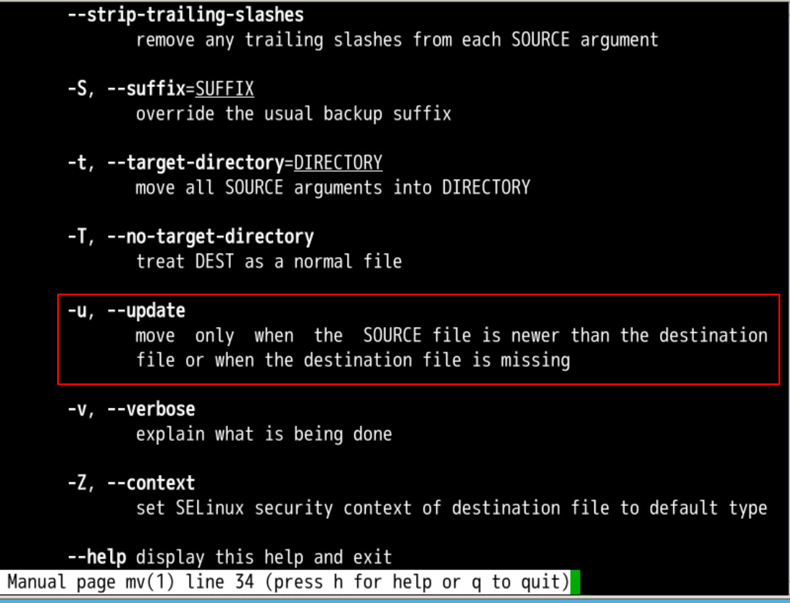
- 先更新一下30_202209150950的更新时间
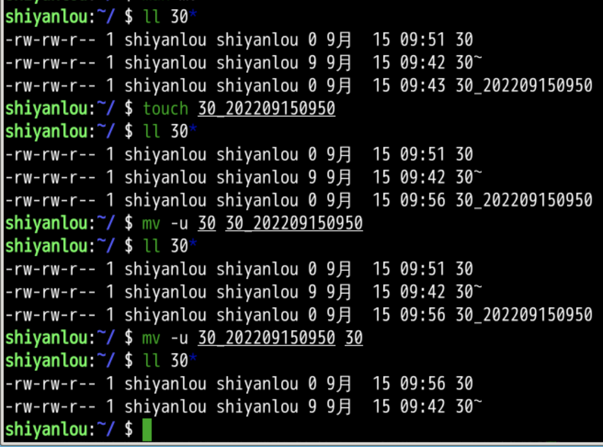
- 旧的不可以替换新的
- 新的可以替换旧的
- 这里面和时间有很大关系
- 我们先去总结这节课
总结
- 我们这次学习的是移动(mv)
- mv命令
- mv命令有一些参数
- -v 显示细节
- -u 更新文件
- -i 交互式
- -f 强制
- -n 不覆盖
- --suffix 控制后缀
- 这里面的更新和时间有很大关系
- 每个文件都有三个时间
- 这如何理解呢？🤔
- 下次再说👋